Tecnologia
Modo Sistemas
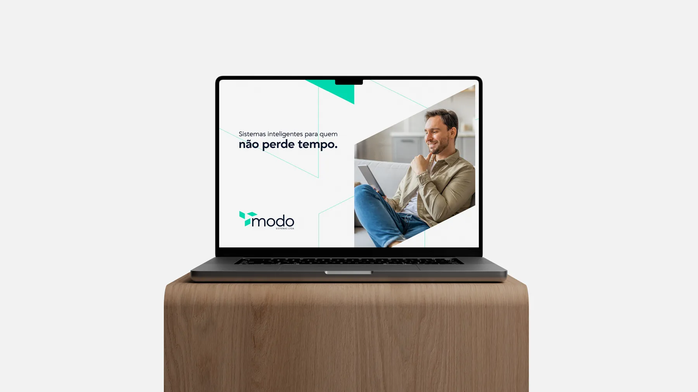
A Modo Sistemas pede uma identidade que comunique método: ordem, ritmo e decisão. O sistema visual organiza o nome, o símbolo e as aplicações para um produto que precisa parecer tão claro quanto a operação que entrega.
Do conceito às peças de presença, a direção trata a marca como interface — legível de longe, precisa de perto, pronta para crescer em tela, documento e ambiente.
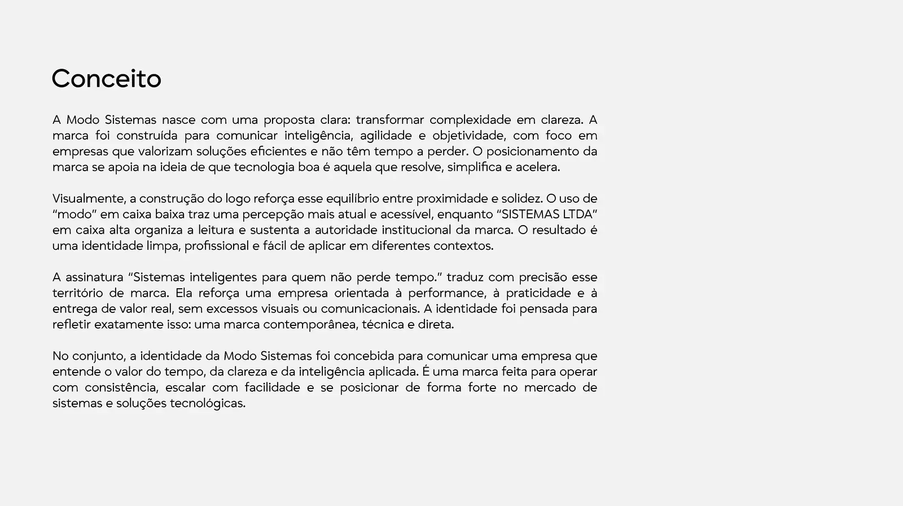
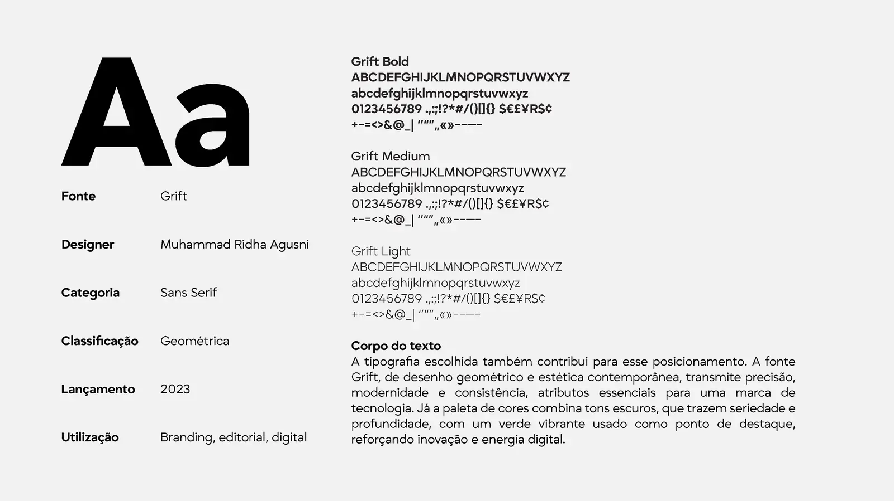
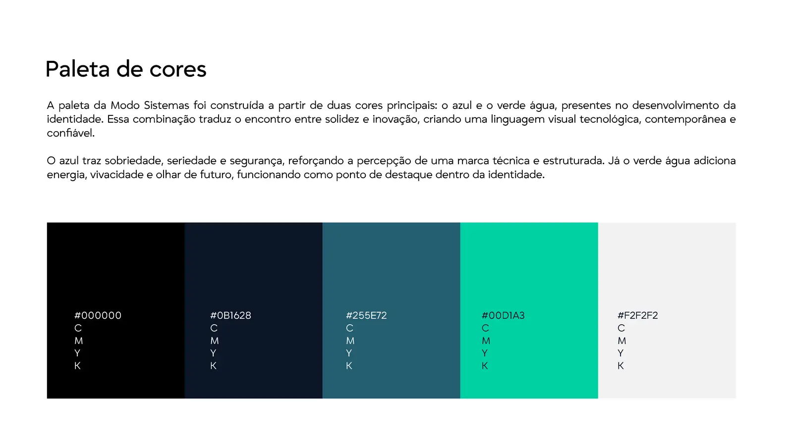
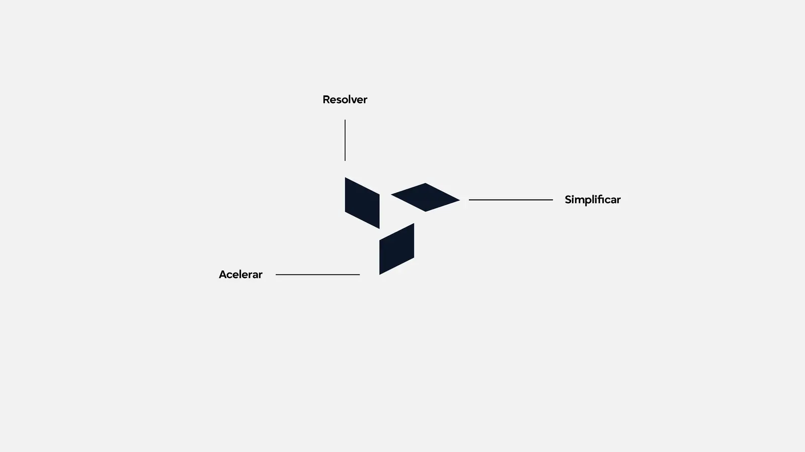
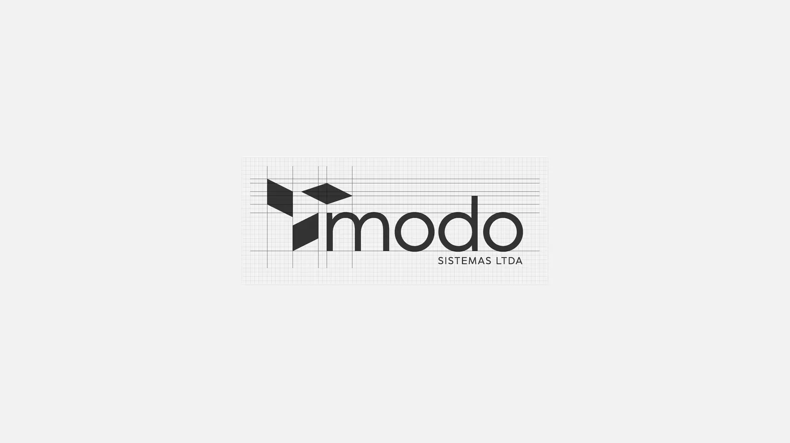
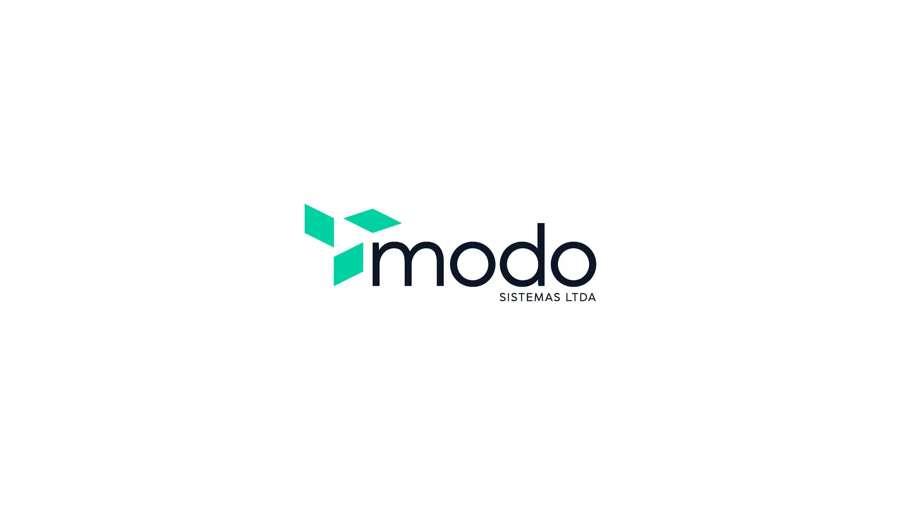
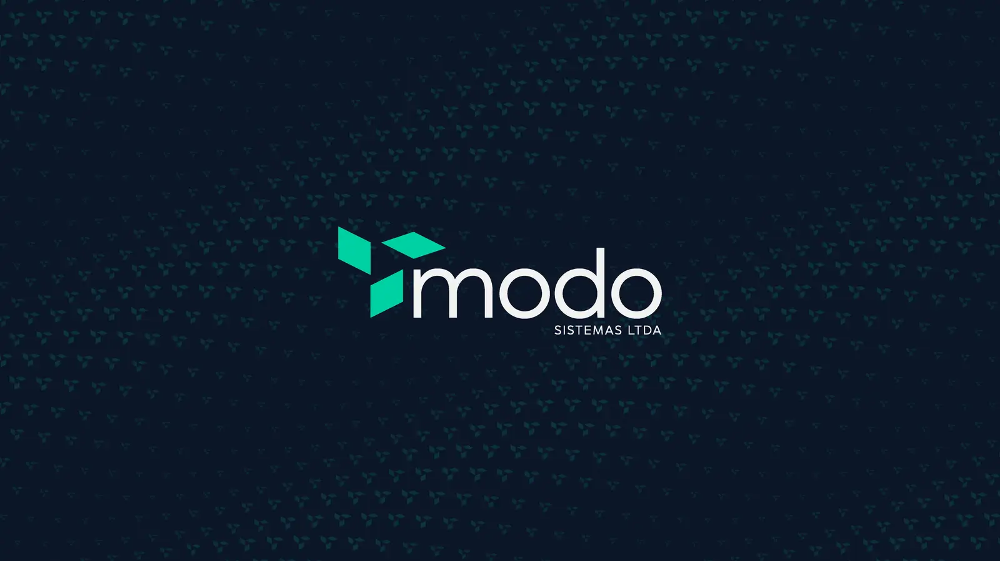
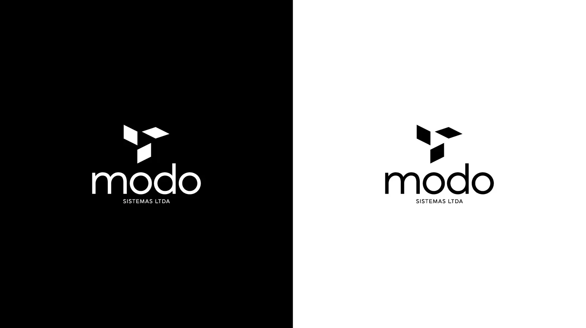
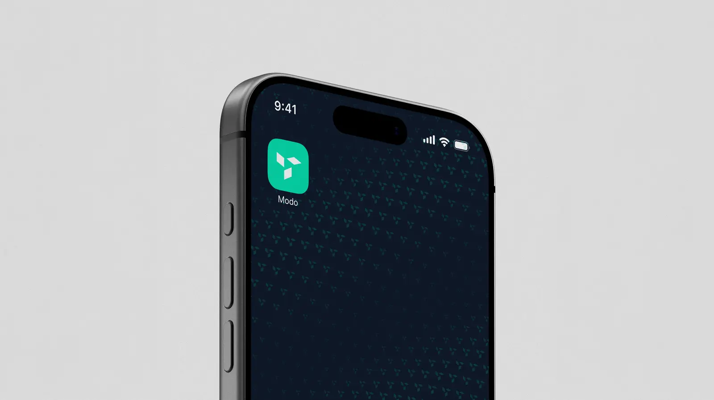
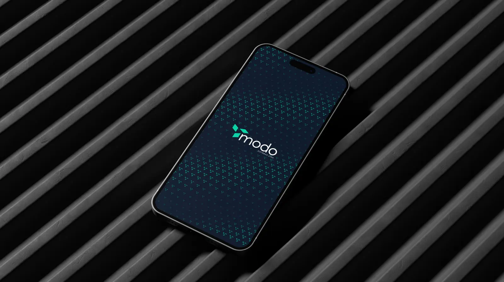
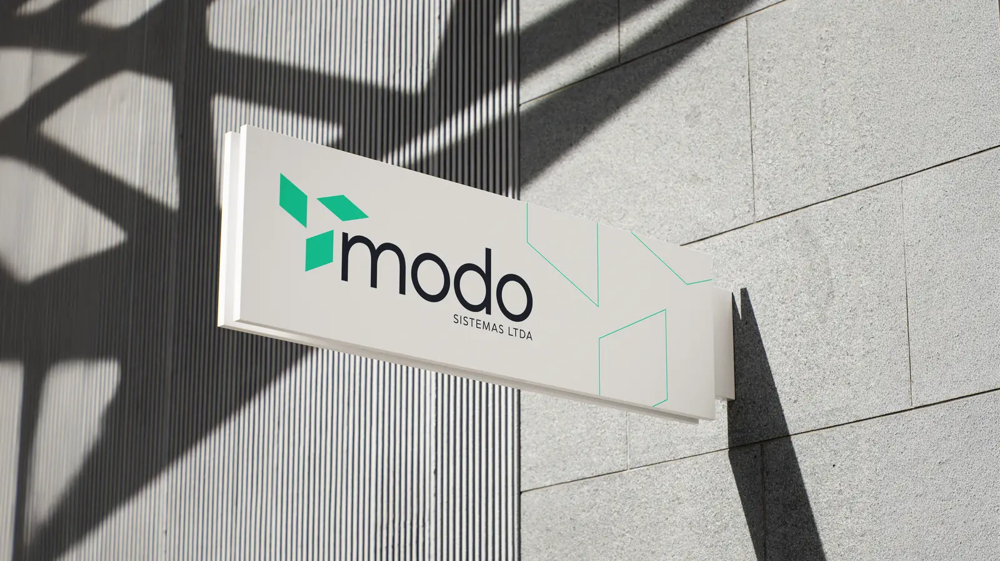
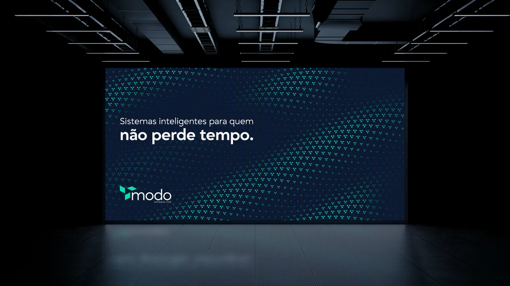
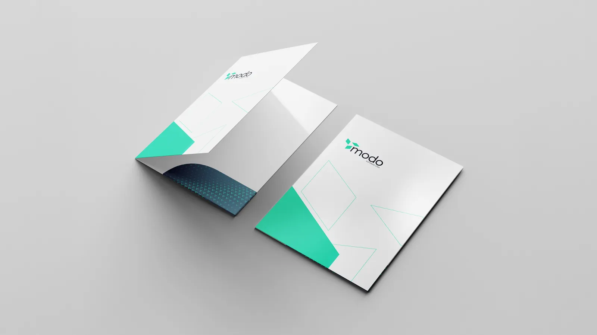